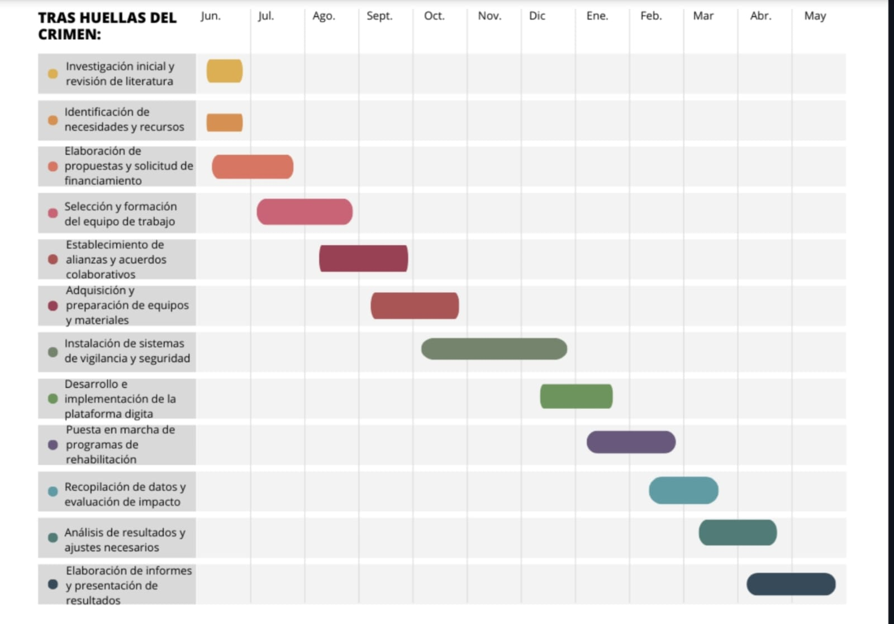

Personal: Honorarios del equipo de investigación: $10,000, Gastos de desplazamiento y viáticos: $2,000, Capacitación y entrenamiento del personal: $3,000
Equipamiento y tecnología: Adquisición de cámaras de vigilancia y sistemas de seguridad: $20,000, Equipamiento informático y software especializado: $5,000, Costos de mantenimiento y actualización de tecnología: $3,000
Materiales y suministros: Material de oficina y papelería: $1,000, Materiales para la instalación de infraestructura de seguridad: $3,000, Otros suministros necesarios para el desarrollo del proyecto: $2,000
Logística y operaciones: Alquiler de espacios para reuniones y eventos: $1,500, Costos de transporte y logística: $2,000, Publicidad y difusión del proyecto: $1,500
Contingencias: Fondos destinados a imprevistos y contingencias: $3,000.
Total estimado del presupuesto: $57,000.00
El financiamiento para este proyecto se obtendrá a través de una combinación de fuentes, que incluyen:
Fondos gubernamentales: Se solicitará apoyo financiero a nivel municipal, estatal y posiblemente federal, mediante la presentación de propuestas y proyectos ante las instancias correspondientes.
Patrocinios y donaciones: Se establecerán alianzas con empresas privadas, organizaciones no gubernamentales y otras entidades interesadas en contribuir al mejoramiento de la seguridad ciudadana. Estas colaboraciones pueden materializarse a través de donaciones en efectivo, equipos de seguridad, asistencia técnica o servicios profesionales.
Recursos propios: En caso de que sea necesario, se utilizarán recursos propios de la institución o comunidad involucrada en el proyecto. Esto podría incluir fondos destinados a programas sociales, seguridad ciudadana o desarrollo comunitario. Además, se buscará la participación activa de los habitantes de Zacualtipán de Ángeles para aportar con recursos materiales o trabajo voluntario.
Convocatorias y programas de financiamiento externo: Se explorarán convocatorias y programas de financiamiento externo, tanto a nivel nacional como internacional, que estén dirigidos a proyectos de seguridad ciudadana y prevención del delito. Esto podría implicar la presentación de propuestas a fondos específicos o la participación en programas de cooperación técnica y financiera.

Una opción para la publicación de los resultados y hallazgos de este proyecto podría ser la revista científica especializada en criminología y seguridad ciudadana. La opción de una revista arbitrada e indizada en esta área es "Crime & Delinquency", una publicación revisada por pares que aborda temas relacionados con la delincuencia, el control social y las políticas de seguridad. Publicar un artículo en esta revista permitiría compartir los resultados de investigación con la comunidad académica internacional y contribuir al avance del conocimiento en el campo de la criminología.
Para un reporte técnico, la mejor opción sería publicar en el Instituto Nacional de Estadística y Geografía (INEGI) de México. Esta institución es responsable de recopilar, procesar y difundir información estadística y geográfica de México. Publicar un reporte técnico en el INEGI permitiría compartir los hallazgos del proyecto sobre la delincuencia en Zacualtipán de Ángeles de manera accesible para diferentes instituciones gubernamentales, organizaciones no gubernamentales y la comunidad en general.
Arango Alzat, B., Tamayo Giraldo, L., & Fadul Barbosa, A. (Julio 2021). VIGILANCIA TECNOLÓGICA: METODOLOGÍAS Y APLICACIONES. Universidad de Santiago de Chile: https://www.redalyc.org/pdf/4778/477847114019.pdf.
Gobierno del Estado de Hidalgo Secretaría de Planeación, D. R. (Marzo de 2020). ENCICLOPEDIA DE LOS MUNICIPIOS. Obtenido de ZACUALTIPAN: http://docencia.uaeh.edu.mx/estudios-pertinencia/docs/hidalgo-municipios/Zacualtipan-Enciclopedia-De-Los-Municipios.pdf
Robles Berlanga, F., Hernández, C., & Hernández Pérez , N. (Enero, 2019). ¿Qué pasa en el campo mexicano?:la violencia en los municipios rurales, una aproximacion a su estudio. Centroamerica : https://www.rimisp.org/wp-content/files_mf/1566234853OriginalWorkingPaper_Violenciaenmunicipiosrurales.pdf.
Fonseca, H. V. (Junio de 2020). SciELO. Obtenido de http://www.scielo.org.co/scielo.php?pid=S1909-30632020000100079&script=sci_arttext
García, I. S. (2016). Redalyc. Obtenido de Revista Interamericana de Psicologia/Interamerican Journal of Psychology (IJP): https://www.redalyc.org/pdf/284/28446021013.pdf
ONU-HABITAT. (Marzo de 2024). El Programa de las Naciones Unidas para los Asentamientos Humano. Obtenido de https://onuhabitat.org.mx/index.php/reduccion-del-crimen-a-traves-de-la-planificacion-y-gestion-urbana
Sigcho Junco, G. M. (2021). Universidad Cesar Vallejo. Obtenido de Reposiyorio Digital Intitucional https://repositorio.ucv.edu.pe/handle/20.500.12692/67569